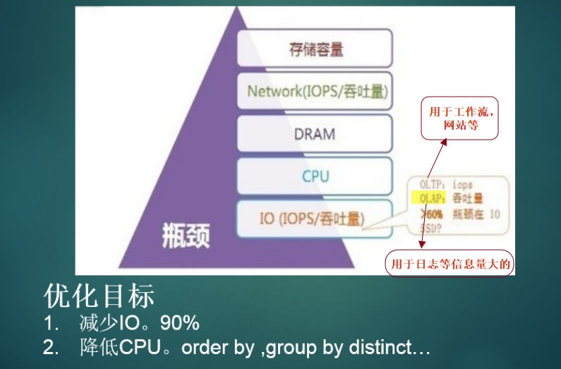

一、mysql安装
1.瓶颈

2.mysql安装

3.mysql安装rmp

4.mysql基本管理及默认路径

5.mysql冷备

6.mysql源码安装


二.mysql服务器架构
1.逻辑视图

2.并发控制

3.MyISAM和InnoDB的比较

存储文件的不同


4.批量导入
语句：

例子：

5.备份，还原

开源热备工具


三.DBA常用命令
1.常用命令

2.explain命令的出现的变量解释


3.show create table

4.show table staus

5.show indexes

6.show variables

7show profiles

四.mysql系统变量


三个性能指标：


五、诊断操作系统状态
Linux常用命令


六、MySQL的分库分表，分区
数据切分（sharding）

分库：

分表：
纵向拆分：

横向拆分：


表分区：


基于range的表分区：

基于hash的表分区


符合分区：

删除，增加，重定义分区：


获取分区表信息：

七、索引
mysql索引类型